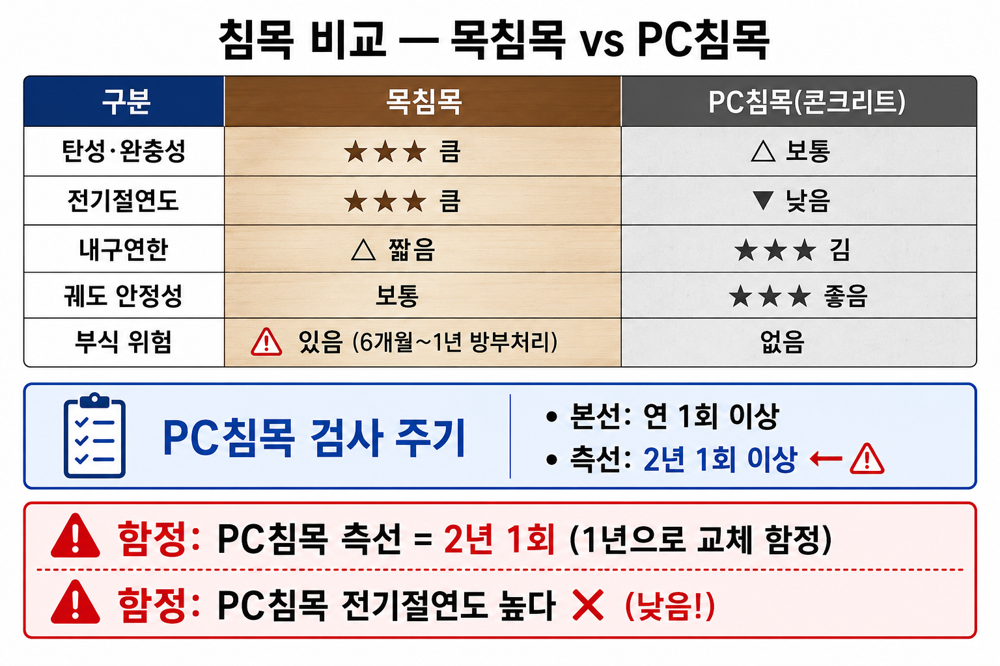

| 구분 | 목침목(木枕木) | PC침목(프리스트레스트 콘크리트) |
|---|---|---|
| 재질 | 목재 (주로 참나무·소나무) | 프리스트레스트 콘크리트 |
| 전기 절연도 | 양호 (목재 자체 절연 특성) | 불량 (콘크리트·강선이 전기 전도 경로) |
| 검사 주기 | 본선 연 1회 이상 / 측선 2년 1회 이상 (SOURCE 27) | |
| 충격 흡수 | 양호 (목재의 탄성) | 목침목보다 불리 (콘크리트 강성) |
| 주요 용도 | 분기기 침목, 일부 특수 구간 | 본선 표준 (현재 주류) |
| 특징 | 가공 용이, 자원 고갈 우려, 부식 약점 | 내구성·강도 우수, 궤도 안정성 높음 |
PC침목(Prestressed Concrete Sleeper): 콘크리트에 강선(강봉)을 이용해 미리 압축 응력을 가한 침목. 열차 하중에 의한 인장 균열을 억제. 목침목 대비 내구성·강도 우수. 현재 국내 본선 표준.
전기 절연 측면: 목침목이 콘크리트침목보다 절연도 우수. PC침목은 체결장치를 통해 전기 절연을 별도로 확보해야 함.
체결장치(fastening system): 레일을 침목에 고정하는 장치. 하중 전달, 궤간 유지, 레일 이동 방지, 전기 절연(PC침목) 등의 역할.
| 체결장치 | 특징 | 적용 |
|---|---|---|
| 보슬로(Vossloh) 체결장치 | 탄성 클립 방식. 나사 스파이크와 탄성 클립 조합. 고탄성·진동감쇠 우수. 유지관리 편리. | 국내 본선·고속선 널리 채용 |
| 판스프링(板 Spring) 체결장치 | 판 형태의 스프링을 레일 저부에 끼워 탄성 고정. 구조 단순. 다소 제한적인 탄성. | 일반 선구 일부 |
| 팬돌롤(Pandrol)형 체결장치 | e-클립(e-clip) 구조로 레일 저부를 눌러 고정. 설치 간단·빠름. 자기 고정성(self-tightening) 특성. | 국내·해외 광범위 사용 |
| 경스파이크(Dog Spike) 체결장치 | 레일을 직접 침목(주로 목침목)에 못처럼 박아 고정. 구조 단순. 이완 발생 가능성 있어 정기 점검 필요. | 목침목 구간, 분기기 일부 |
Q1 정답 ③
PC침목은 콘크리트 강성으로 인해 충격 흡수성이 목침목보다 불리하다. '목침목보다 충격 흡수성이 우수하다'는 PC침목의 장점이 아니라 틀린 설명임. ①내구성, ②유지보수 주기, ④궤도 안정성은 모두 PC침목의 실제 장점.
Q2 정답 ④
플래시버트(Flash Butt)는 레일 용접 방법이지 체결장치가 아님. 체결장치 4종: 보슬로·판스프링·팬돌롤·경스파이크.
Q3 정답 ②
목침목은 목재 특성상 전기 절연도가 우수. PC침목은 내구성·궤도 안정성 등에서는 우세하나, 전기 절연도에서는 목침목이 유리.